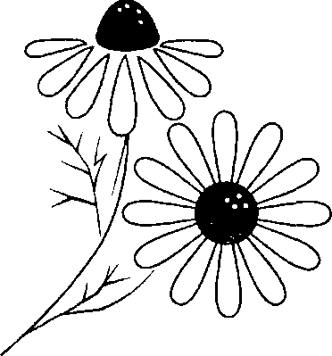
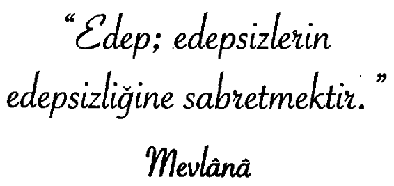

Kavağın yanında bir kabak filizi boy göstermiş. Bahar ilerledikçe bitki kavak ağacına sarılarak yükselmeye başlamış. Yağmurların ve güneşin etkisi ile müthiş hızla büyümüş ve neredeyse kavak ağacıyla aynı boya gelmiş. Bir gün dayanamayıp sormuş kavağa:
“Sen kaç ayda bu hale geldin ağaç?”
“On yılda..demiş kavak.
“On yılda mı?” diye gülmüş ve çiçeklerini sallamış kabak. “Ben neredeyse iki ayda seninle aynı boya geldim, bak...”
“Doğru,” demiş ağaç. “Doğru!”
Günler günleri kovalamış ve sonbaharın ilk rüzgârları başladığında kabak, önce üşümeye başlamış sonra yapraklarını düşürmeye. Soğuklar arttıkça da aşağıya doğru inmeye başlamış.
Sormuş endişeyle kavağa:
“Neler oluyor bana ağaç?”
“Ölüyorsun...” demiş kavak.
“Niçin?” demiş kabak.
‘Benim 10 yılda geldiğim yere, 2 ayda gelmeye çalıştığın için...”